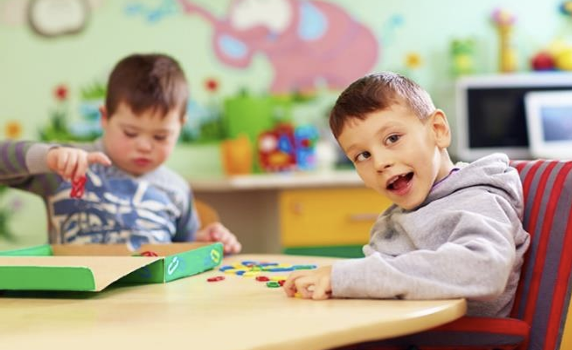
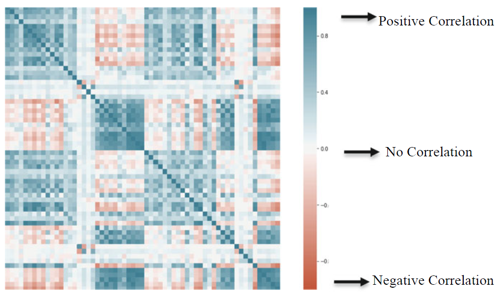

Jannatul Ferdous Srabonee

-

Exploring the Impacts of HEXACO Personality Traits on Text Composition and Transcription
Jannatul Ferdous Srabonee, Ohoud Mosa Alharbi, Wolfgang Stuerzlinger, & Ahmed Arif.
— ACM CHI 2025 -

BezelBraille: A Braille-Inspired Bezel-Guided Virtual Keyboard for Low Vision and Blind Users
Isna Alfi Bustoni, Jannatul Ferdous Srabonee, Gulnar Rakhmetulla, & Ahmed Arif.
— MobileHCI 2026 -
EEG Based Autism Detection Using CNN Through Correlation Based Transformation of Channels' Data
Zahrul Jannat Peya, MAH Akhand, Jannatul Ferdous Srabonee, & Nazmul Siddique.
— IEEE TENSYMP 2020 -

Computer Vision-Based IoT Architecture for Post COVID-19 Preventive Measures
Ahsanul Akib, Kamruddin Nur, Suman Saha, Jannatul Ferdous Srabonee, & M. F. Mridha.
— Journal of Advances in Information Technology 2023 -

Autism Detection from 2D Transformed EEG Signal using Convolutional Neural Network
Zahrul Jannat Peya, MAH Akhand, Jannatul Ferdous Srabonee, & Nazmul Siddique.
— Journal of Computer Science 2022 -

Alcoholism Detection from 2D Transformed EEG Signal
Jannatul Ferdous Srabonee, Zahrul Jannat Peya, MAH Akhand, & Nazmul Siddique.
— IJCACI Springer 2020 -
Gaze & Gape: Hands-Free Text Entry Using Gaze and Mouth-Open Gestures
-
GazeDriver: Semi and Fully Autonomous Telepresence Robot Control Using Eye Gaze in Virtual Reality
-
Effect of Latency on Real-Time Writing Feedback
-
PentaForce: Novel Force based Input Technique using Five Fingers
-
A Systematic Review on Various Motor Imagery Tasks used In Brain-Computer Interfaces
No publications match the selected filters. Try selecting "All" on one of the filter rows above.